Թեստ 51
30:00
1. "Ճանապարհային երթևեկության անվտանգության ապահովման մասին" ՀՀ օրենքի համաձայն՝ D, DE կարգերի, D1 և D1E ենթակարգերի տրանսպորտային միջոցներ վարելու միջազգային վարորդական իրավունքի վկայական կարող է տրվել՝
2. Վերադասավորում է համարվում
3. Ավտոբուսների շահագործումն արգելվում է, եթե՝
4. Տրանսպորտային միջոցների շահագործումն արգելվում է, եթե՝
5. Դուք շարունակում եք երթևեկությունն ուղիղ․ պարտավոր ե՞ք արդյոք զիջել ճանապարհը թեթև մարդատար ավտոմոբիլին։
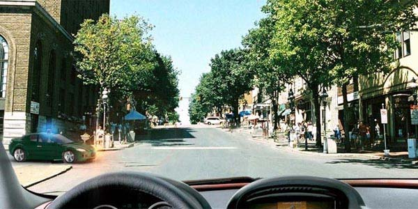
6. Ո՞ր տրանսպորտային միջոցի երթևեկությունն է արգելում այս ճանապարհային նշանը:
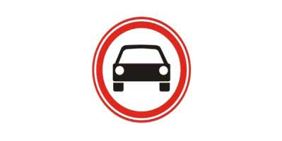
7. Խաչմերուկը երրորդը կանցնի`
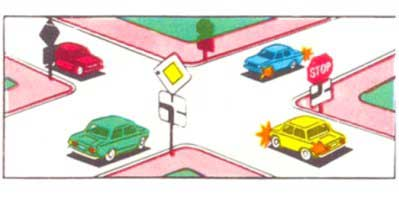
8. Եթե կարգավորողի ձեռքերը կողմ են պարզված կամ իջեցված են, ապա նրա ձախ և աջ կողմերից ոչ ռելսագնաց տրանսպորտային միջոցների երթևեկությունը թույլատրվում է`
9. Այս ճանապարհային նշանները տեղեկացնում են
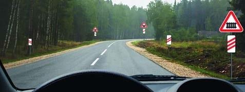
10. Թույլատրվո՞ւմ է կայանել նշված վայրում
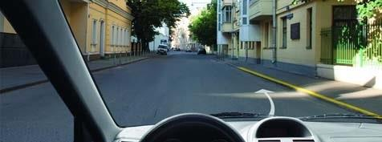
11. Որ ավտոմոբիլին է թույլատրվում կանգառ կատարել այս նշանների ազդման գոտում:
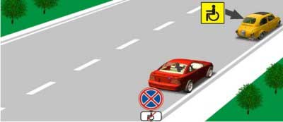
12. Կոշտ կցիչով քարշակման ժամանակ հեռավորությունը տրանսպորտային միջոցների միջև պետք է լինի ոչ ավելի`
13. Տալի՞ս է արդյոք երթևեկության առավելություն տրանսպորտային միջոցի վրա միացված դեղին գույնի (նարնջագույն) առկայծող փարոսիկը:
14. Թույլատրվու՞մ է արդյոք մուտք գործել երկաթուղային գծանց տվյալ իրավիճակում:
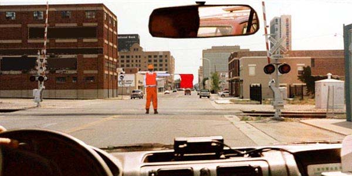
15. Ի՞նչ կանոն է խախտում վարորդը մուտք գործելով բակ
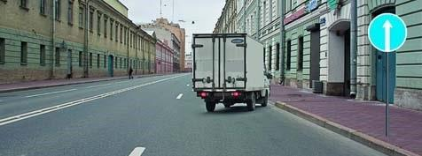
16. Նշաններից ո՞րի դեպքում պետք է զիջեք ճանապարհը հանդիպակաց երթևեկողին նեղ հատվածում
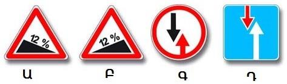
17. Լուսացույցի դեղին թարթող ազդանշանի պարագայում
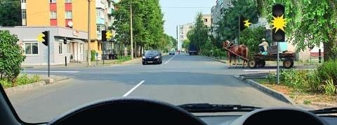
18. Երթևեկությունը թույլատրվում է
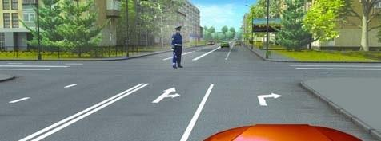
19. Այս իրավիճակում ի՞նչ կարող է նշանակել վարորդի դուրս պարզած ձեռքը
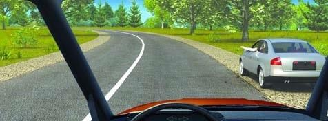